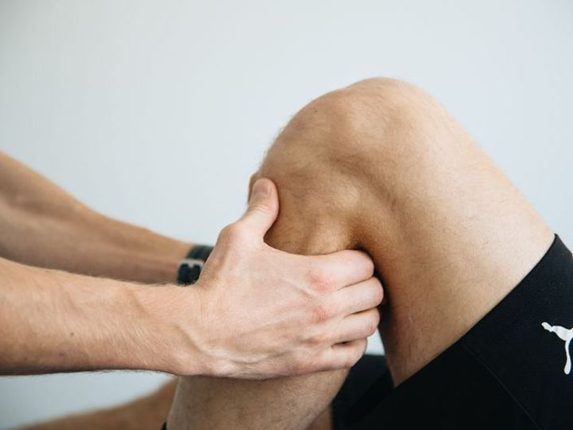

Traditional Siddha medicine and Varmam therapy with careful follow-up, in Maharaja Nagar, Tirunelveli. Clinic visits and online consultations.
Call +91 93446 98304 WhatsAppPlans of 1, 3, 6 or 12 months, with diet guidance, Siddha medicines and regular tracking of your readings in the app.
Diet, medicines and sugar tracking aimed at better control and, where possible, remission.
Cycle, weight and scan follow-up with Siddha care.
Steady, supervised weight and waist reduction.
Diet and medicines with scan and blood-test follow-up.
Lifestyle changes and Siddha care with lipid checks.
For back, neck, shoulder, knee, ankle and head pain. Each plan is decided by the doctor after examination.

Coming from outside Tirunelveli? Start with an online pain consultation; if needed, stay-and-treat admission is arranged at our partner hospital, Cure Siddha Hospital.
BSMS · Siddha physician
Specialist in diabetes and Varmam, treating diabetes and pain since November 2023.
Book visits, post your sugar, weight and diet, chat with the clinic, see your reports and order medicines. Available for our patients; the Google Play link will appear here soon.